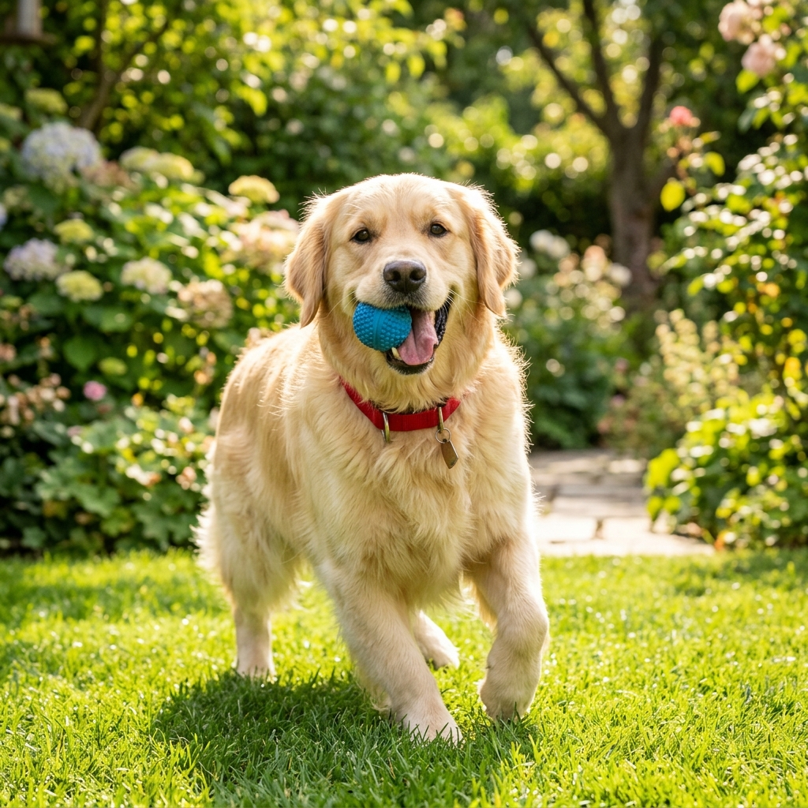

Adopt Love, Give Them Hope
Team Prayas is a premium green animal sanctuary based in Surat, spaying strays, providing trauma surgeries, and facilitating perfect family adoptions.

Rescuing the Neglected strays since 2018
At Team Prayas, we rescue injured, neglected, and traumatized street animals around Surat, rehabilitate them at our Silent Zone shelter, spay/neuter them, and match them with loving homes.
Meet Some of Our Pets
These beautiful souls are vaccinated, spayed/neutered, and waiting to become a part of your family.
Stories from Happy Homes
Nothing makes our rescue efforts more rewarding than seeing our pets thrive in their new permanent families.
Adopting Rocky has completely transformed our house. He has a lot of energy and fits perfectly into our green farmhouse in Dumas Road. Team Prayas supported us through the entire home verification process!
Mishra Family
Adopted Rocky (Golden Retriever)Luna was a tiny shivering kitten when Team Prayas rescued her from the monsoon streets. Today, she is a fluffy Persian princess who rules our sofa. Thank you Prayas for saving this precious life.
Ritika Sharma
Adopted Luna (Persian Mix)I was a first-time pet owner, and Team Prayas made everything incredibly easy. They provided a detailed medical passport log and vaccination card for Milo. The process was thorough and transparent.
Priyesh Patel
Adopted Milo (Shorthair Cat)Join the Rescue Mission
Whether it is cleaning cages, assisting doctors, feeding puppies, or processing home audits, Team Prayas needs you.
Join Team Prayas